Diagramas dinâmicos
Histórico de Revisão
| Data | Versão | Descrição | Autor |
|---|---|---|---|
| 12/09/2019 | 0.1 | Criação do documento, adição da estrutura e diagramas de estado do Pedido | Elias Bernardo |
| 19/09/2019 | 0.2 | Adição do diagrama de colaboração referente a realização de pedido. | Shayane Alcântara |
| 19/09/2019 | 0.3 | Adição do diagrama de sequencia referente ao cadastro do usuário, do diagrama de sequencia referente ao login de usuário. | Saleh Kader |
| 19/09/2019 | 0.4 | Adição do diagrama de colaboração referente a autenticação do usuário e do cadastro de cartões de credito. | Guilherme Marques |
1. Introdução
Este documento tem por objetivo mostrar os seguintes diagramas dinâmicos: de colaboração, de estado e de sequência
2. Diagrama de colaboração
Os diagramas a seguir de comunicação (chamado diagrama de colaboração na UML 1.x) é um tipo de diagrama de interação UML que mostra interações entre objetos e / ou partes (representadas como linhas de vida ) usando mensagens sequenciadas em um arranjo de forma livre [1].
2.1 Microsserviço de Pedidos
O diagrama a seguir usa a notação UML de colaboração para descrever o fluxo de funcionamento de realização de um pedido.
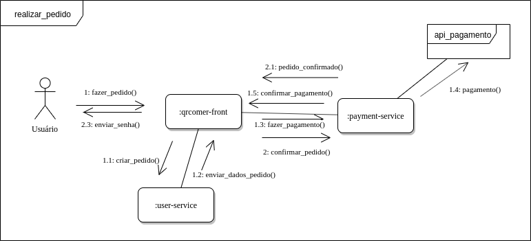
| DS01 | Diagrama de colaboração do microsserviço de pedidos |
|---|---|
| Versão | Atual: 1.0 (17/09) Anterior: - |
| Descrição | Diagrama UML de colaboração do microsserviço de pedidos |
| Autor | Saleh Kader, Matheus Blanco |
2.2 Microsserviço de Restaurante
z O diagrama a seguir usa a notação UML de colaboração para descrever o fluxo de funcionamento do cadastro de um cardápio.
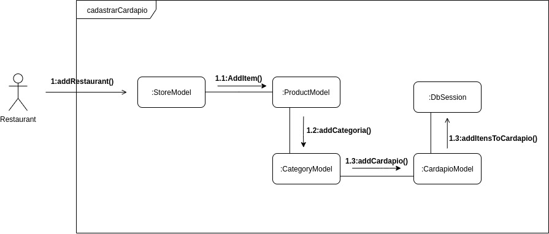
| DC02 | Diagrama de colaboração do microsserviço de Restaurante |
|---|---|
| Versão | Atual: 1.0 (19/09) Anterior: - |
| Descrição | Diagrama UML de colaboração do microsserviço de restaurante |
| Autor | Pedro Rodrigues, Sara Silva |
2.3 Microsserviço de Usuário
Os diagramas a seguir ilustram a relação do microsserviço de usuário com alguns cenários de uso.
2.3.1 Realizar pedido
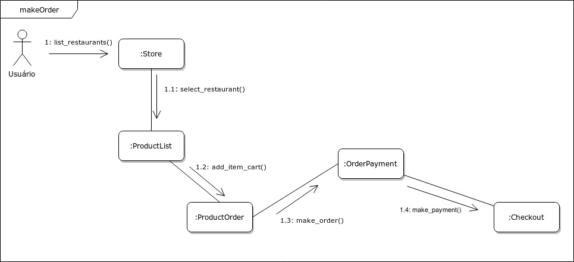
| DC03 | Diagrama de colaboração do microsserviço de Usuário - Realizar pedido |
|---|---|
| Versão | Atual: 1.0 (19/09) Anterior: - |
| Descrição | Diagrama UML de colaboração do microsserviço de Usuário - Realizar pedido |
| Autor | Shayane Alcântara e Guilherme Marques |
2.3.2 Realizar autenticação
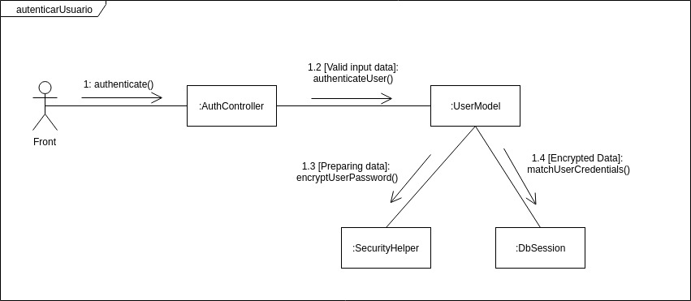
| DC04 | Diagrama de colaboração do microsserviço de Usuário - Realizar autenticação |
|---|---|
| Versão | Atual: 1.0 (19/09) Anterior: - |
| Descrição | Diagrama UML de colaboração do microsserviço de Usuário - Realizar autenticação |
| Autor | Shayane Alcântara e Guilherme Marques |
2.3.4 Cadastrar Cartão de Crédito
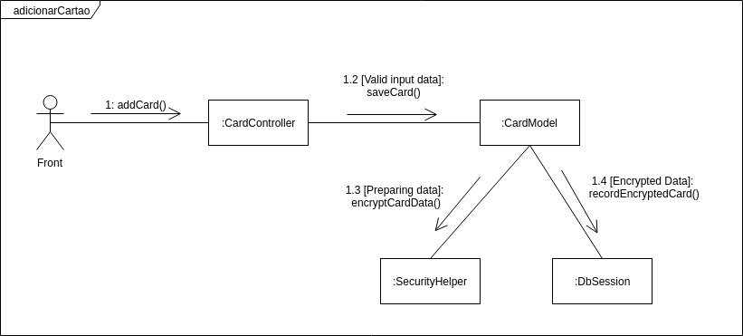
| DC05 | Diagrama de colaboração do microsserviço de Usuário - Cadastrar cartão de crédito |
|---|---|
| Versão | Atual: 1.0 (19/09) Anterior: - |
| Descrição | Diagrama UML de colaboração do microsserviço de Usuário - Cadastrar Cartão de crédito |
| Autor | Shayane Alcântara e Guilherme Marques |
3. Diagrama de estado
3.1 Pedidos
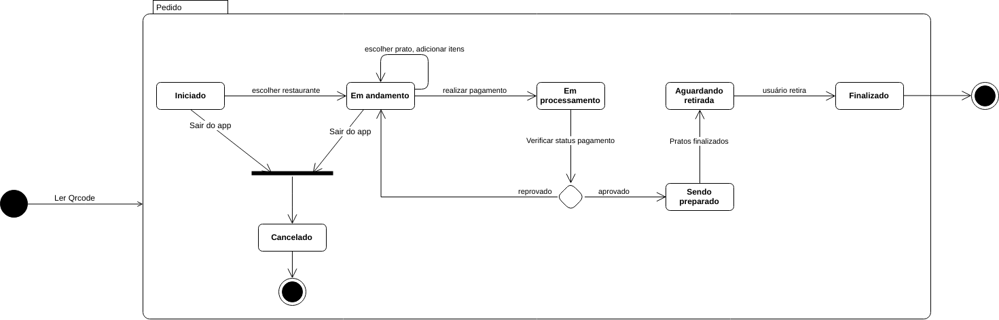
| DE01 | Diagrama de estado - Pedidos |
|---|---|
| Versão | Atual: 1.0 (18/09) Anterior: - |
| Descrição | Diagrama de estado que exibe todos os possíveis estados para um pedido. |
| Autor | Elias Bernardo e Leonardo Barreiros |
3.2 Instância Vue.js
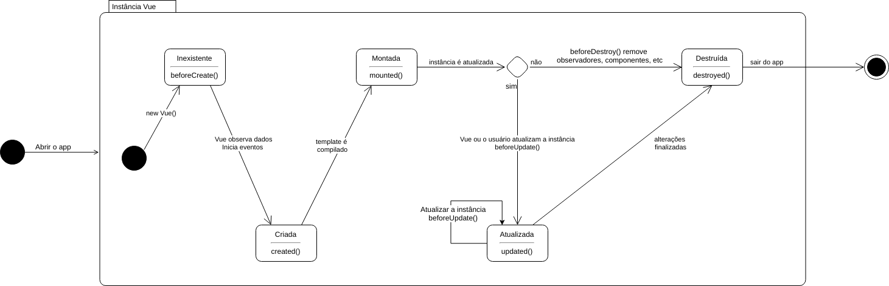
| DE02 | Diagrama de estado - Instância VUE |
|---|---|
| Versão | Atual: 1.0 (18/09) Anterior: - |
| Descrição | Diagrama de estado que exibe o ciclo de vida de uma instância VUE. |
| Autor | Elias Bernardo e Leonardo Barreiros |
4. Diagrama de sequência
4.1 Diagrama sequêncial do microsserviço de pedidos
4.1.1 Fazer pedidos
O diagrama a seguir usa a notação UML sequêncial para descrever o fluxo de funcionamento de requerimento e pagamento de um pedido.
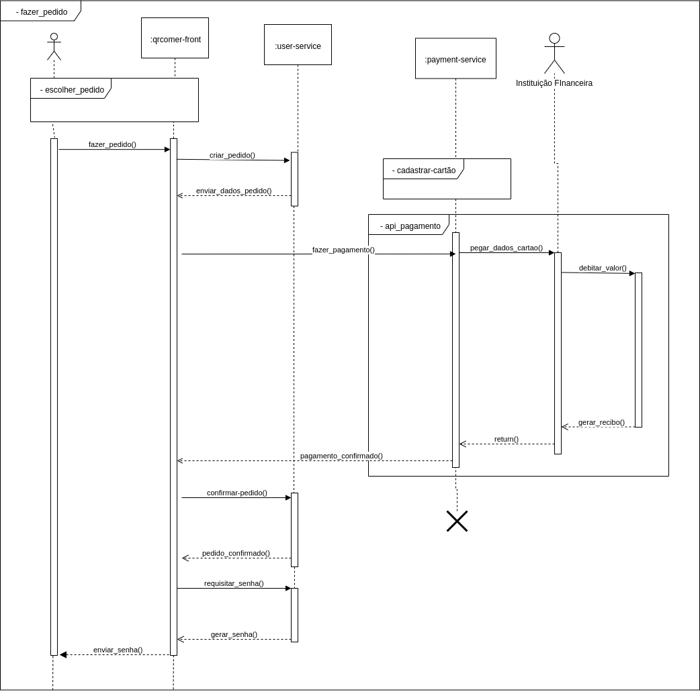
| DS01 | Diagrama de sequência de realização de pedidos |
|---|---|
| Versão | Atual: 2.0 (19/09) Anterior: 1.0 |
| Descrição | Diagrama UML da sequência do microsserviço de pedidos |
| Autor | Pedro Feo, Matheus Blanco |
{kind=link}
4.1.2 Checar pedidos antigos
O diagrama a seguir usa a notação UML sequêncial para descrever o fluxo de funcionamento de checagem de um pedido antigo.
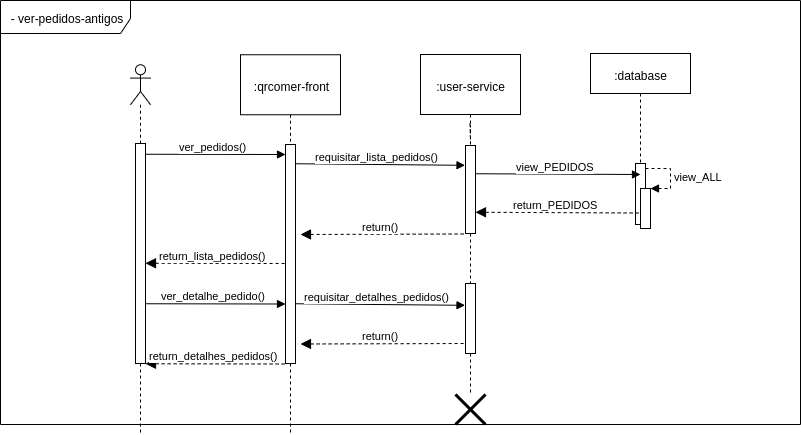
| DS01 | Diagrama de sequência de checagem de pedidos antigos |
|---|---|
| Versão | Atual: 1.0 (17/09) Anterior: - |
| Descrição | Diagrama UML da sequência do microsserviço de checagem de pedidos antigos |
| Autor | Pedro Feo, Matheus Blanco |
4.1.3 Checar pedidos ativos
O diagrama a seguir usa a notação UML sequêncial para descrever o fluxo de funcionamento de checagem de um pedido antigo.
| DS01 | Diagrama de sequência de checagem de pedidos ativos |
|---|---|
| Versão | Atual: 2.0 (19/09) Anterior: 1.0 |
| Descrição | Diagrama UML da sequência do microsserviço de checagem de pedidos ativos |
| Autor | Pedro Feo, Matheus Blanco |
{kind=link}
4.2 Diagrama sequêncial do microsserviço de usuários
4.2.1 Cadastro de usuário
O diagrama a seguir usa a notação UML sequêncial para descrever o fluxo de funcionamento de cadastro do usuários.

| DS02 | Diagrama de sequência de cadastro de usuário |
|---|---|
| Versão | Atual: 1.0 (19/09) Anterior: - |
| Descrição | Diagrama UML da sequência do cadastro de usuários |
| Autor | Pedro Feo, Saleh Kader |
4.2.1 Login de Usuário
O diagrama a seguir usa a notação UML sequêncial para descrever o fluxo de login de usuários.
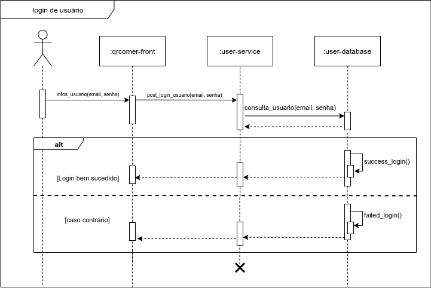
| DS02 | Diagrama de sequência de login de usuário |
|---|---|
| Versão | Atual: 1.0 (19/09) Anterior: - |
| Descrição | Diagrama UML da sequência de login de usuários |
| Autor | Saleh Kader |
4.2.3 Cadastro de cartão
O diagrama a seguir usa a notação UML sequêncial para descrever o fluxo de funcionamento de cadastro de cartões.
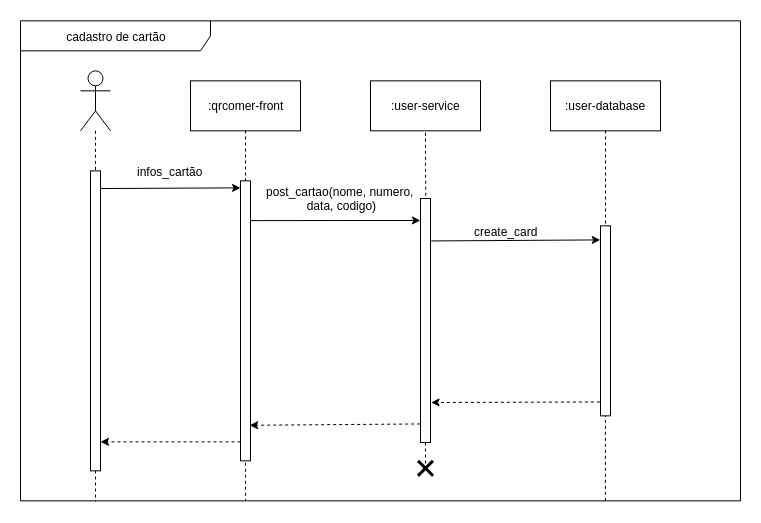
| DS02 | Diagrama de sequência de cadastro de cartão |
|---|---|
| Versão | Atual: 1.0 (19/09) Anterior: - |
| Descrição | Diagrama UML da sequência do cadastro de cartão |
| Autor | Pedro Feo |
Referências
Diagramas de Colaboração. Disponível em: https://www.uml-diagrams.org/communication-diagrams.html. Acesso em: 19 de setembro de 2019.
VENTURA, Plínio. Entendendo o Diagrama de Sequência da UML: Entenda como especificar as interações entre as funcionalidades de um software. [S. l.], 10 fev. 2019. Disponível em: https://www.ateomomento.com.br/diagrama-de-sequencia-uml/. Acesso em: 17 set. 2019.
Versões anteriores
DS01 Diagrama de Sequência Microsserviço de pedidos
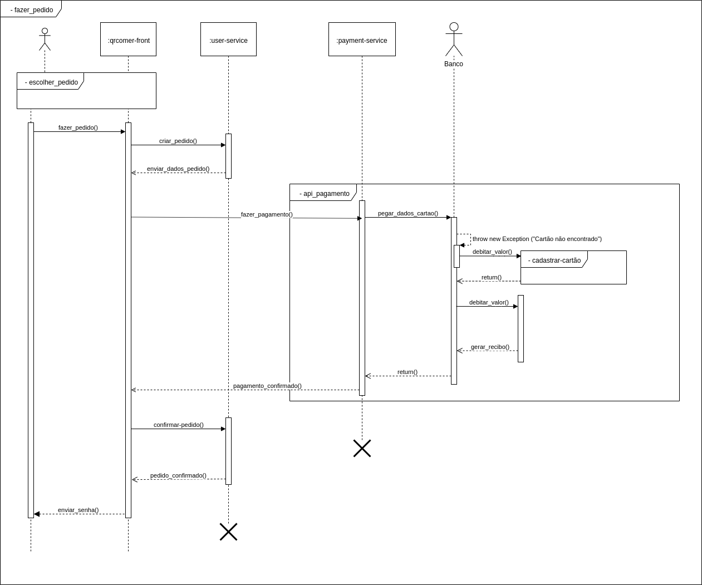
| DS01 | Diagrama de sequência de realização de pedidos |
|---|---|
| Versão | Atual: 1.0 (17/09) Anterior: - |
| Descrição | Diagrama UML da sequência do microsserviço de pedidos |
| Autor | Pedro Feo, Matheus Blanco |
DS02 Diagrama de Sequência Microsserviço de pedidos ativos
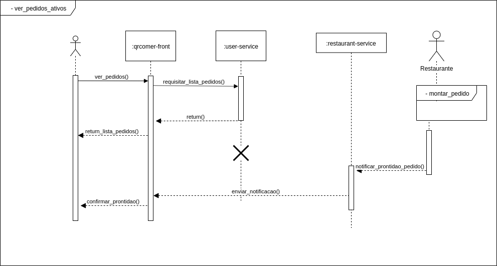
| DS01 | Diagrama de sequência de checagem de pedidos ativos |
|---|---|
| Versão | Atual: 1.0 (17/09) Anterior: - |
| Descrição | Diagrama UML da sequência do microsserviço de checagem de pedidos ativos |
| Autor | Pedro Feo, Matheus Blanco |